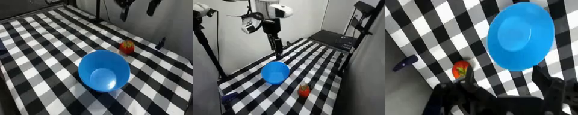
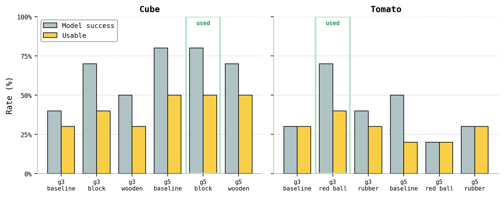
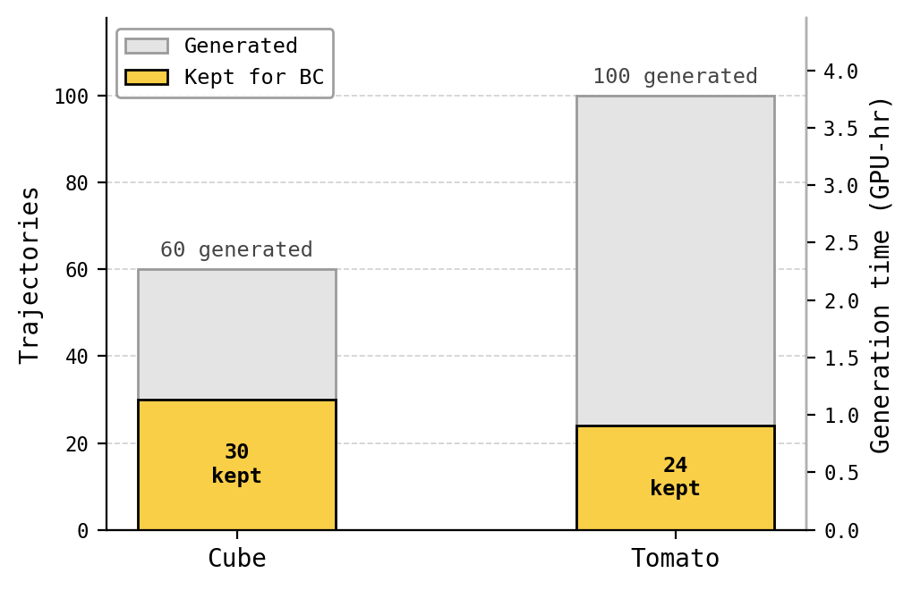
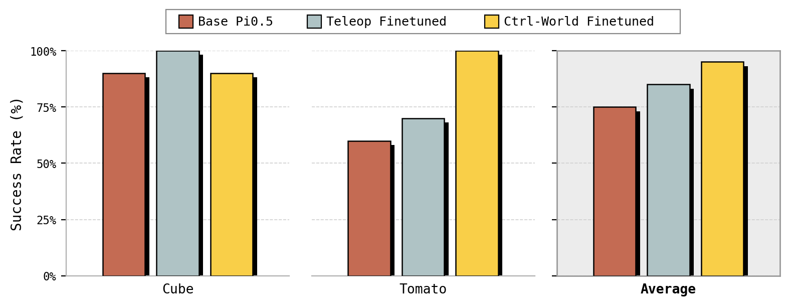

Ctrl-World-finetuned policy on the real robot — cube.
Ctrl-World-finetuned policy on the real robot — tomato.
1. Background and Setup
Generalist vision-language-action (VLA) policies like pi0.5 have shown strong capabilities across a wide range of robot manipulation tasks. When deployed in a new real-world setting, however, performance becomes unreliable: differences in objects, camera viewpoints, lighting, workspace layout, and robot configuration all shift the input distribution away from what the policy was trained on. The standard fix is to gather more human teleoperation demonstrations and finetune. That process is slow, requires uninterrupted access to the physical robot, and scales poorly because every new task starts from scratch.
We study whether a learned world model — Ctrl-World — can reduce that dependence on fresh real-robot data. Rather than collecting new demonstrations for each task, we use Ctrl-World to synthesize robot rollouts and treat those imagined trajectories as behavior-cloning (BC) data for finetuning pi0.5. We then test whether this synthetic-data adaptation actually improves real-world performance.
The system is fed a pretrained pi0.5 policy, the Ctrl-World checkpoint, initial observations from our real Franka setup, and natural-language task instructions like “pick up the cube” or “pick up the tomato.” The output is a pi0.5 policy adapted to that task. Real-robot evaluation measures whether the finetuned policy improves task performance.
Our main research question is: do synthetic rollouts generated by Ctrl-World improve pi0.5’s real-world performance on robot manipulation tasks? More specifically we hypothesize that finetuning on successful Ctrl-World rollouts can improve either real-world success rate or trajectory quality, particularly for tasks where the base pi0.5 policy is partially capable but unreliable.
The main technical question sits underneath that: whether Ctrl-World rollouts are reliable enough to act as BC data at all. Behavior cloning requires paired observation–action samples, so the imagined visual frames have to stay consistent with the corresponding robot actions. If the world model produces visual artifacts, object drift, or object morphing, the policy can learn wrong visual–action associations. The challenge therefore is not just generating synthetic trajectories, but generating trajectories that are visually grounded enough to transfer back to the real Franka setup.
- Inputs: pretrained pi0.5 (OpenPI
pi05_droid), Ctrl-World checkpoint, an initial real-Franka snapshot (3 calibrated camera views + robot state), and a natural-language instruction. - Outputs: a task-adapted pi0.5 checkpoint (LoRA adapter or full weights), plus a real-robot success rate and qualitative trajectory-quality assessment.
- Challenge: imagined frames must stay visually grounded with the recorded action chunks — otherwise BC bakes spurious visual–action associations into the adapted policy.
Prompt: put the orange block in the blue bowl

Starting workspace
Ctrl-World imagined
Prompt: pick up the tomato and place it in the blue bowl

Starting workspace
Ctrl-World imagined
2. Approach
We started with a pretrained pi0.5 policy and the Ctrl-World world model. We extended the existing VLA + world-model pipeline to a real Franka lab setup and tested whether synthetic rollouts from Ctrl-World can serve as behavior-cloning data for task-specific finetuning. Our approach has four stages:
2.1 Task selection
We first vetted a small set of candidate manipulation tasks both on the real Franka setup and inside Ctrl-World. This step matters because Ctrl-World rollouts are only useful as BC data when the world model can render visually plausible trajectories for the task; otherwise downstream finetuning learns noise. From these initial tests we kept two tasks: cube pickup (“put the orange block in the blue bowl”) and tomato pickup (“pick up the tomato and place it in the blue bowl”). Both were chosen because the base pi0.5 produced at least some successful real-robot behavior and Ctrl-World produced rollouts that were stable enough to curate.
2.2 Synthetic rollout generation
For each task we generated synthetic robot trajectories by running pi0.5 in the loop with Ctrl-World: pi0.5 emits an action chunk from the current imagined observation, Ctrl-World renders the next frames conditioned on that action, and the loop repeats for 22 policy↔world-model interactions (4 frames each, ~88 imagined frames total per rollout). Many of the rollouts contain artifacts — object drift, object morphing, prompt-induced hallucinations — so we ran a parameter sweep to find configurations that produce visually stable rollouts.
Baseline generation parameters. Our sweep used the Ctrl-World defaults as the reference point for each task: 22 policy↔world-model interactions per rollout, 5 predicted frames per interaction with 2 frames of policy skip (~88 imagined frames, 176 action steps), an fps=4 world-model schedule, num_inference_steps=50 for the diffusion sampler, the cube_snapshots_v3 / tomato_snapshots_v3 camera layouts (agent overhead + exterior_2 + wrist as inputs to the world model, with policy observations of exterior_1, exterior_2, and wrist resized to 224×224), and the literal task prompt — “put the orange cube in the blue bowl” for cube and “put the tomato in the blue bowl” for tomato. Classifier-free guidance was swept over {3, 5, 8, 10, 12} with g=8 as the sweep’s central anchor.
Deviations chosen for the final training pools. Two knobs moved off the baseline before we generated the actual BC dataset:
- Prompt rewording. The literal “cube” and “tomato” nouns triggered noticeable rendering trouble in Ctrl-World (object morphing for cube, duplicated/hallucinated tomatoes for tomato). Substituting visually-similar generic nouns — “orange block” for cube and “small red ball” for tomato — gave noticeably cleaner imagined videos at the same guidance scale. The same reworded prompt is fed to both pi0.5 (as its language conditioning) and Ctrl-World (as its text conditioning) during rollout generation, so pi0.5 acts as if it’s reaching for a “block” / “red ball” while Ctrl-World renders the imagined “block” / “red ball” into the frame. The physical scene itself is unchanged — the snapshot still shows the actual cube / tomato — so the resulting observation–action pairs are still grounded in the right object, just labeled with a friendlier noun.
- Guidance scale. We dialed guidance down from the g=8 sweep anchor: g=5 for cube and g=3 for tomato. Higher guidance produced more visibly “sharp” frames but also more artifacts under those text conditions; the lower-guidance settings traded a small amount of crispness for substantially fewer morphing/drift failures across the val set.
Concretely the chosen settings were: for cube, guidance 5 with the prompt “put the orange block in the blue bowl”; for tomato, guidance 3 with the prompt “put the small red ball in the blue bowl.” Snapshot dataset, camera layout, frame count, and all other world-model hyperparameters stayed at their defaults.
To pick these settings we ran each candidate prompt/guidance configuration over a fixed set of 10 snapshot seeds per task and scored two things inside Ctrl-World: model success (the imagined rollout ends with the object in the bowl) and the stricter usable rate (the rollout also has to be visually clean enough that its observation–action pairs are safe to train on). This is purely a data-quality filter for choosing a generation config — it is not a measure of real-robot performance. We picked the configuration with the best usable rate (breaking ties on visual smoothness): g5 “block” for cube and g3 “red ball” for tomato.

2.3 BC bundle conversion
Successful Ctrl-World rollouts are converted into BC bundles compatible with pi0.5’s expected inputs. Each training sample is an observation–action pair: the observation is a synthetic visual frame (exterior + wrist 224×224 RGB) plus the corresponding robot proprioception (joint position, gripper position), and the action is a 15-step DROID-format action chunk produced by pi0.5 during that imagined rollout. This is important because the policy is learning from both visual observations and actions, not just the final action sequence. We curated the bundles by hand — only rollouts judged both successful and visually clean were kept (~30 cube and ~24 tomato trajectories in the primary training pools). For the teleop baseline, we built parallel bundles from 30 cube and 24 tomato hand-collected demonstrations using the same observation format.
2.4 Fine-tuning and deployment
We finetune pi0.5 on the synthetic trajectories and evaluate the resulting checkpoints on the real Franka. We experimented with both LoRA finetuning and full fine-tuning. LoRA was the practical default because, with only ~24–30 trajectories per task, updating fewer parameters reduces the risk of severe overfitting; full fine-tuning checkpoints exist in the portfolio but were not used in the final real-robot runs. EMA training loss is monitored and the run is tagged automatically at thresholds 0.10 / 0.04 / 0.015, which lets us pick a checkpoint at a comparable point in training across both tasks. Post-training, checkpoints are moved to the lab machine and deployed on the real robot for evaluation; the portfolio under real_robot_checkpoints/ contains 42 tagged checkpoints across both tasks with associated metadata.
2.5 Observation choice
For observations we primarily used a single exterior third-person camera (exterior_2) and a single wrist camera. Any unused camera inputs are masked or padded to match the input format expected by the pretrained pi0.5 checkpoint. This keeps the observation structure identical between synthetic training, real-robot deployment, and the teleop baseline, which avoids a confounder where the policy gets different camera coverage at train time vs deployment time.

What we started with: pretrained pi0.5 (OpenPI pi05_droid), Ctrl-World checkpoint, DROID norm stats.
What we added: rollout orchestration with timing/logging, the BC bundle format and loader, threshold-based training and early-stop tagging, a 42-checkpoint real-robot portfolio under real_robot_checkpoints/, a teleop-baseline pipeline from hand-collected HDF5 demos, and an in-Ctrl-World quality-filtering harness for choosing generation configs.
Dataset generation cost. Ctrl-World imagined rollouts dominate wall-clock; on one H100 (80GB) GPU each 22-step rollout takes about 136 sec/video. The cube training pool was 60 videos generated at guidance 5 with the “orange block in the blue bowl” prompt — about 2.3 hours total. The tomato training pool was 100 videos generated at guidance 3 with the “small red ball in the blue bowl” prompt — about 3.8 hours total. After generation, manual curation of which trajectories to keep (success + clean) was the second-largest cost.

3. Evaluation and Results
3.1 Definition of success
We evaluate along three axes:
- Task success rate — the fraction of real-robot trials in which the Franka arm successfully picks up the target object (and places it in the bowl for the pick-and-place variant), judged by the operator on the lab machine. This is the primary metric.
- Trajectory quality — the smoothness, stability, and directness of the motion during execution. With limited trial counts this is hard to quantify precisely, so we report it qualitatively from real-robot rollouts.
- Data efficiency — whether Ctrl-World synthetic rollouts can deliver a useful adaptation signal while reducing the need for further human teleoperation. This is what motivates including the teleop-finetuned baseline at matched trajectory counts.
3.2 Experimental setup and baselines
We evaluate on two real-robot manipulation tasks: pick up cube and pick up tomato. We chose these tasks because they are within pi0.5’s competence envelope on our setup and Ctrl-World produces usable rollouts for them. We compare three policy variants on the real Franka:
- Base pi0.5 — the pretrained checkpoint (
pi05_droid) deployed directly with no task-specific finetuning. This is the reference point for whether finetuning helps at all. - Ctrl-World finetuned pi0.5 — pi0.5 finetuned on the curated synthetic rollouts (30 cube trajectories at guidance 5 with the “block” prompt, 24 tomato trajectories at guidance 3 with the “red ball” prompt). This is the experimental condition.
- Teleop finetuned pi0.5 — pi0.5 finetuned on real human teleoperation trajectories (30 cube, 24 tomato) using the same LoRA hyperparameters, image augmentation, and observation format. The trajectory count is matched so this is a like-for-like data-efficiency comparison rather than a horserace against a much larger teleop dataset.
All three variants use the same observation pipeline (exterior + wrist 224×224 RGB, joint and gripper state), the same DROID action format, and the same pi0.5 backbone. The only thing that varies across conditions is the source of supervision used for adaptation. The primary comparison is base vs Ctrl-World; the teleop column is a controlled baseline for what the same finetuning recipe achieves on real data instead of imagined data. All scoring reported here is on the real robot — the only in-Ctrl-World scoring we do is the data-quality filter used to choose a generation config (§2.2), which we do not treat as an evaluation of policy performance.
3.3 Main results
| Task | Base pi0.5 | Teleop FT | Ctrl-World FT | Notes |
|---|---|---|---|---|
| Pick up cube | 90% | 100% | 90% | Already near-ceiling; smoother trajectories after Ctrl-World FT. |
| Pick up tomato | 60% | 70% | 100% | Large gain from synthetic FT. |

Real-robot rollouts
The same task executed on the physical Franka under all three policies: base pi0.5 (no task fine-tuning), the teleop-finetuned baseline, and our Ctrl-World-finetuned policy. Use the buttons under each clip to switch between the cube and tomato examples.
Base pi0.5
Teleop-finetuned
Ctrl-World-finetuned (ours)
3.4 Interpretation
Ctrl-World-finetuned (ours), real robot — smooth approach and place.
Teleop-finetuned, real robot — reaches the cube but with jerkier motion.
Cube — same success rate, smoother motion. Base pi0.5 was already strong on cube (90%), and both finetuned variants are near that ceiling on the real robot (Ctrl-World 90%, teleop 100%). With a binary success metric and a small trial budget we can’t resolve those few points, so the more meaningful difference is qualitative: our Ctrl-World-finetuned policy reaches for the cube with a noticeably smoother, more direct approach and retreat than the teleop-finetuned checkpoint, which moves more abruptly.
Ctrl-World-finetuned (ours), real robot — slow, deliberate pick (100% in our trials).
Teleop-finetuned, real robot — faster, more error-prone (70%).
Tomato — large success gain. Here the base policy was less reliable (60%) and there was real room to improve: our Ctrl-World fine-tune reaches 100% versus 70% for the matched teleop checkpoint. We think a big part of the gap is execution speed. Our policy, trained on Ctrl-World rollouts that advance in slow action chunks, executes the pick much more slowly and deliberately; the teleop-finetuned policy inherits the fast pace of the hand-collected demos and tends to commit to a hurried chunk and overshoot the grasp.
Our Ctrl-World imagined tomato rollout — slow, chunk-by-chunk motion.
Recorded human teleop demo — noticeably faster, continuous motion.
The speed difference traces back to the supervision itself. The recorded human teleoperation is fast and continuous, whereas our Ctrl-World imagined rollouts play out at the slower chunk-by-chunk pace of the world-model loop — so the policy trained on them moves more slowly on the real robot.
These results should be read with caution: two tasks and tens (not hundreds) of real-robot trials per condition. The tomato gain is encouraging, but a stronger claim about generalization would need more tasks, more trials, and ideally an unseen-prompt condition.
3.5 Conclusion
Ctrl-World synthetic rollouts are a viable source of behavior-cloning data for adapting pi0.5 on real manipulation tasks. Effects are largest when the base policy is not already saturated. Careful rollout curation and real-robot evaluation remain essential.
4. Failure Cases and Limitations
The primary failure mode comes from Ctrl-World generation quality. Some synthetic rollouts exhibit visual artifacts, object drift, or object morphing. These matter because behavior cloning learns from paired observation–action samples: if the generated observation is incorrect for the action, the policy can learn the wrong visual–action association. We saw this directly during dataset selection — the “tomato” prompt produces a high rate of duplicated/hallucinated tomatoes that we had to filter out, which is why we ended up generating training data with the surrogate “red ball” prompt and only re-applying the bowl-style language at finetune time. The generation-config sweep in §2.2 makes this concrete: even on the best tomato config, only about 40% of imagined rollouts were clean enough to be usable as training data, far below the cube yield.
We also saw signs of overfitting when fine-tuning on small datasets, especially with full fine-tuning. This motivated using LoRA as the practical default: with only ~24–30 trajectories per task it updates fewer parameters and is less likely to overfit catastrophically. Full-finetune checkpoints are present in the portfolio for completeness but were not evaluated on real hardware.
Concrete limitations of this evaluation:
- Two tasks only. Cube pickup and tomato pickup. A broader claim about generalization across object categories needs more tasks.
- Small trial counts per condition. Real-robot trial budgets were limited (tens of trials, not hundreds), so success-rate differences of a few points are within noise.
- Manual rollout curation. Successful synthetic rollouts are hand-selected; the “successful imagined rollouts → BC data” loop is not yet fully automatic. Auto-scoring rollouts (e.g. with a verifier model) is the obvious next step.
- Sim-to-real gap. Ctrl-World’s imagined frames are visually close to but not identical to the physical scene; checkerboard textures, lighting, and arm appearance all carry small distribution shifts.
- Short-horizon tasks. Both tasks are single-object pick(-and-place) with ~3–5 second motions. We have not tested longer-horizon tasks that would stress the world model’s temporal consistency or accumulate compounding error.
5. Team Responsibilities
Responsibilities overlapped in practice; the primary owners are listed below.
- Abhijnya Bhat — Real-robot setup and on-hardware evaluation, teleoperation interface/use, and real-data collection.
- Wayne Chu — Task selection in Ctrl-World and the pi0.5 interaction setup for running policy-in-the-loop Ctrl-World rollouts.
- Olivia Taylor — Model training and fine-tuning experiments, Ctrl-World parameter sweep, and synthetic dataset generation and filtering.
6. References
- Sun, T. et al. Ctrl-World: A Controllable World Model for Generalist Robot Manipulation. 2025.
- Physical Intelligence. pi0.5: A Vision-Language-Action Model with Open-World Generalization (OpenPI reference checkpoint
pi05_droid). 2024. - Khazatsky, A. et al. DROID: A Large-Scale In-the-Wild Robot Manipulation Dataset. 2024.
- Hu, E. et al. LoRA: Low-Rank Adaptation of Large Language Models. ICLR 2022.
- Brohan, A. et al. RT-2: Vision-Language-Action Models Transfer Web Knowledge to Robotic Control. 2023. (background VLA reference)
- Black, K. et al. pi_0: A Vision-Language-Action Flow Model for General Robot Control. 2024. (background VLA reference)